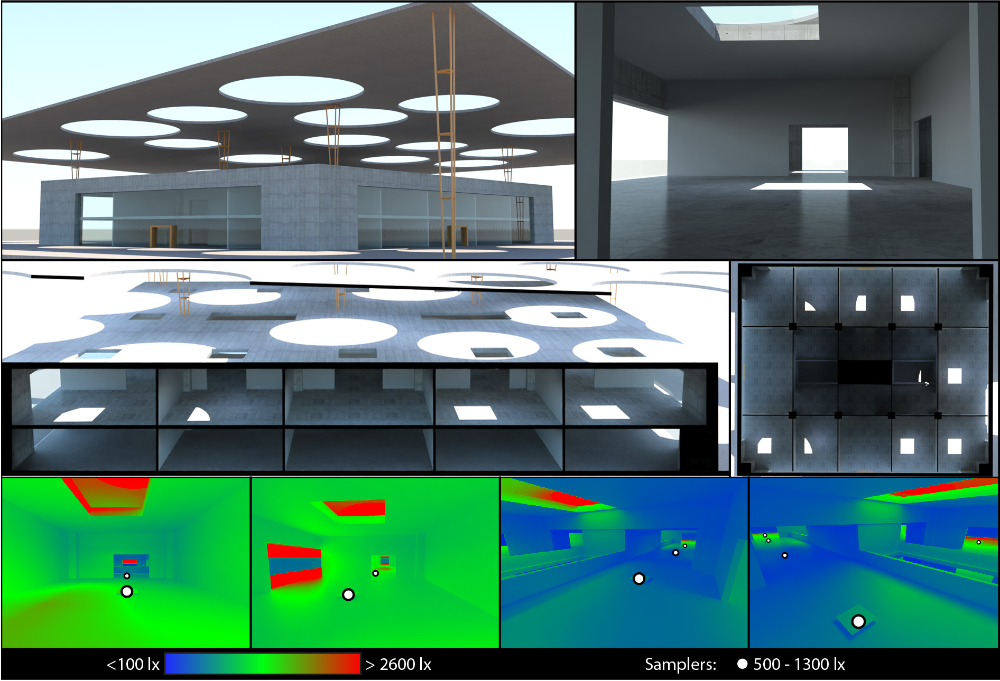

Opening Design using Bayesian Optimization
Nick Vitsas
1
Iordanis Evangelou
1
Georgios Papaioannou
1
Anastasios Gkaravelis
1
1Department of Informatics, Athens University of Economics and Business

To be presented in CGI 2023
Abstract
Opening design is a major consideration in architectural buildings during early structural layout specification. Decisions regarding the geometric characteristics of windows, skylights, hatches, etc., greatly impact the overall energy efficiency, airflow and appearance of a building, both internally and externally. In this work, we employ a goal-based, illumination-driven approach to opening design using a Bayesian Optimization approach, based on Gaussian Processes. A method is proposed that allows a designer to easily set lighting intentions along with qualitative and quantitative characteristics of desired openings. All parameters are optimized within a cost minimization framework to calculate geometrically feasible, architecturally admissible and aesthetically pleasing openings of any desired shape, while respecting the designer's lighting constraints.
Acknowledgements
This research was funded by the Hellenic Foundation for Research and Innovation
(H.F.R.I.) under the “3rd Call for H.F.R.I. Research Projects to support Post-Doctoral Researchers” (Project No: 7310, LOTUS).
Copyright Notice
This is the author prepared version of the work. Original publisher’ s version can be found at TBD
 Computer Graphics AUEB
Computer Graphics AUEB